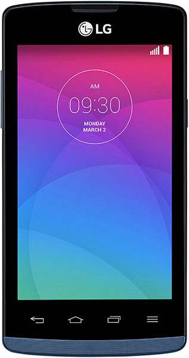

LG Joy (lg-h220)
Jump to navigation
Jump to search
|
 LG Joy | |
| Manufacturer | LG |
|---|---|
| Name | Joy |
| Codename | lg-h220 |
| Released | 2015 |
| Category | testing |
| Original software | Android 4.4 (KitKat) |
| Hardware | |
| Chipset | Qualcomm MSM8210 Snapdragon 200 |
| CPU | Dual-core 1.2 GHz Cortex-A7 |
| GPU | Adreno 302 |
| Display | 480x800 |
| Storage | 4 GB |
| Memory | 512 MB |
| Architecture | armv7 |
{kind=link}
| USB Networking | |
|---|---|
| Flashing | |
| Touchscreen | |
| Display | |
| WiFi | |
| FDE | |
| Mainline | |
| Battery | |
| 3D Acceleration | |
| Audio | |
| Bluetooth | |
| Camera | |
| GPS | |
| Mobile data | |
| SMS | |
| Calls | |
| USB OTG | |
| NFC | |
| Accelerometer | |
|---|---|
| Magnetometer | |
| Ambient Light | |
| Proximity | |
| Hall Effect | |
| Ir TX | |
|---|---|
| TrustZone | |
Contents
Contributors
Maintainer(s)
Additional info
Entering "Factory data reset mode"
- Turn off the device
- Press and hold Volume Down + Power
- Release Power when LG logo appears
- While still pressing Volume Down, press and hold Power again
- Release Volume Down when Factory Data Reset menu appears
Entering "LG Download mode"
- Turn off the device
- Press and hold Volume Up
- Connect the USB cable
- Release Volume Up when Download mode appears